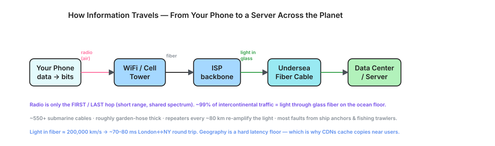
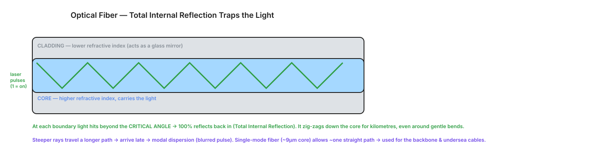

From a byte in your laptop to a server across the planet — encapsulation, modulation, radio vs light, undersea cables, total internal reflection in optical fiber, and why latency has a hard physical floor.
When you send a message, it doesn't leave your machine as "text." It's wrapped, layer by layer, each adding a header — like nesting envelopes. This is the network stack at work.
Your data: "GET /account"
| wrap with TLS -> encrypted payload
v
+ TCP header (ports, sequence #, so it arrives reliably and in order)
v
+ IP header (source IP, destination IP — for routing across the world)
v
+ Link header (MAC addresses — for the next physical hop)
v
===> becomes a stream of BITS: 1010 1100 0011 ...
| Medium | Carries bits as | Used for |
|---|---|---|
| Copper wire | Voltage levels (high/low) | Ethernet, old phone lines |
| Radio / air | Electromagnetic waves (freq/amplitude) | WiFi, cellular, satellite |
| Optical fiber | Pulses of light (on = 1, off = 0) | Internet backbone, undersea |
Bits: 1 0 1 1 0 Light: ON off ON ON off <- a laser flashing billions of times/sec
People imagine data flying "through the air." That's only true for the very first and very last hop. The long-haul middle is overwhelmingly light through glass fiber.
[Your phone] ~~radio~~> [WiFi router / cell tower] <- AIR: first hop only
|
fiber/copper to ISP
|
====== FIBER BACKBONE ====== <- light through glass
|
==== UNDERSEA FIBER CABLE ==== <- across oceans
|
fiber to data center
|
[Server / data center] <- usually wired, no radio
THE JOURNEY AS A DIAGRAM

How does light travel kilometers down a thin, often bending strand of glass without leaking out the sides? Two layers of glass and one elegant physics trick.
cross-section of a fiber:
+-----------------------------+
| CLADDING (glass) | lower refractive index
| +---------------------+ |
| | CORE (glass) | | higher refractive index
| | ~~~ light path ~~ | | <- light is trapped in HERE
| +---------------------+ |
| CLADDING (glass) |
+-----------------------------+
The thin central glass that actually carries the light. It has a higher refractive index (light travels slightly slower in it).
An outer glass layer with a lower refractive index. Its job: reflect escaping light back into the core. It's a mirror made of glass, not metal.
CORE, CLADDING & THE BOUNCING LIGHT

CLADDING (lower index)
────────●────────────────●─────────── boundary
/\\ /\\ light bounces, never escapes
/ \\ / \\
laser● \\ / \\
\\ \\ / \\
─────────●────●──────●──────────────── boundary
CLADDING (lower index)
Light zig-zags down the core via repeated total internal reflections,
staying trapped even as the fiber bends around corners.
The zig-zag has a downside. Light rays bouncing at steeper angles travel a longer total path than rays going nearly straight — so they arrive at slightly different times, smearing the pulse.
THE FIX — SINGLE-MODE FIBER
Core ~50 µm. Many zig-zag paths → modal dispersion. Cheap, short range (within a building/campus).
Core ~9 µm — so thin light travels essentially one straight path. No modal dispersion → very long range. Used for the backbone & undersea cables.
Light in glass travels at about 200,000 km/s (~⅔ of its speed in vacuum, because the core slows it). That's fast — but the planet is big, and this sets a floor no engineering can beat.
| Path | Approx round-trip latency |
|---|---|
| Same city / same data center | < 1–5 ms |
| London ↔ New York | ~70–80 ms RTT |
| Halfway around the globe (one-way) | ~100+ ms (light alone, before routing/queuing) |
HUMAN PERCEPTION THRESHOLDS
Since geography is a fixed latency cost, the only way to make things feel fast everywhere is to shorten the physical distance — put copies of data near the user.
Without CDN: user (Mumbai) ───── 250 ms ─────► origin server (US) slow
With CDN: user (Mumbai) ── 5 ms ──► edge node (Mumbai) fast
| (cached copy)
origin (US) fills the cache occasionally